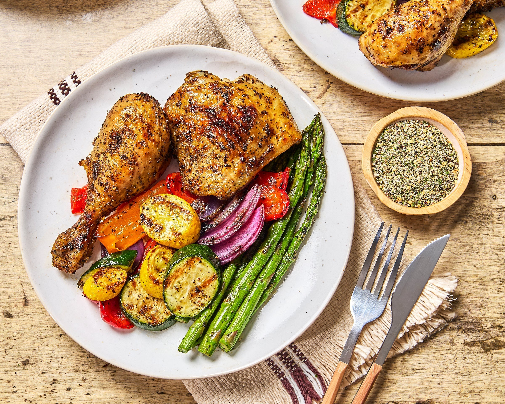

Pan cooked chicken with vegetables
Home

Description
It might sound very simple, but it's just a tasty nice recipe for those days where you don't feel like cooking much.
This recipe of pan cooked chicken with vegetables is perfect for a weekday dinner, and very easy to make!
Ingredients
For two people:
- A tray of chicken stripes
- 2 medium potatoes
- 1 red bell pepper
- 5 carrots
- 1 medium onion
For the chicken seasoning:
- 1tbsp of olive oil
- 1tsp of paprika
- 1tsp of garlic powder
- 1/2tsp of cumin
For the vegetables and potatoes:
- 2tbsp of olive oil
- 1tsp of paprika
- 1/2tsp of oregano
Steps
- Preheat the oven to 200º. Cut the potatoes into fries, slice the pepper and carrots into strips and slice the onion into half rings. Toss all of them with olive oil, paprika, oregano, salt and pepper.
- Spread on a baking tray and roast in the oven for 30-35 minutes, stirring halfway, until it is golden and tender.
- While the potatoes and vegetables are cooking, add olive oil to the chicken strips and season with paprika, garlic powder, cumin, salt and pepper. Let marinate for 10-15 minutes (optional).
- Cook the chicken in a pan with a drizzle of oil over medium-high heat, stirring occasionally during 5-7 minutes.